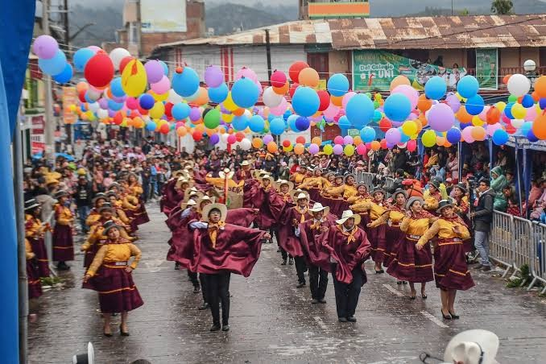
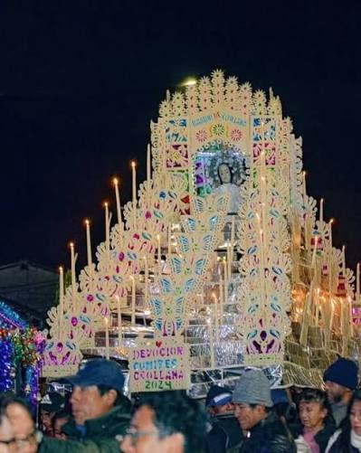

Chaupi
Su nombre quechua se interpreta como “en medio”. Es uno de los cuatro barrios de la organización tradicional puquiana.
Un recorrido por las raíces, los barrios, las tradiciones y la identidad de Puquio, en los Andes de Ayacucho.
La historia de una ciudad andina se descubre en su territorio, en la memoria de sus comunidades y en las costumbres que permanecen.
Puquio es la capital de la provincia de Lucanas, en el departamento de Ayacucho. Su nombre se relaciona con la voz quechua pukio, que significa manantial o fuente de agua. El entorno de la ciudad estuvo asociado a la presencia de puquiales, un rasgo que forma parte de la memoria de su paisaje.
La identidad histórica de Lucanas está vinculada a los antiguos pueblos rucanas, cuyas raíces forman parte de la historia prehispánica de esta región andina. A lo largo del tiempo, Puquio se convirtió en un centro urbano, comercial y administrativo importante para el sur de Ayacucho.
La vida social y cultural de Puquio está profundamente ligada a sus cuatro barrios tradicionales, también conocidos como ayllus.
Su nombre quechua se interpreta como “en medio”. Es uno de los cuatro barrios de la organización tradicional puquiana.
Barrio reconocido por su presencia en la memoria cultural y literaria de Puquio y por su plaza de Yawar Fiesta.
Uno de los ayllus históricos de la ciudad, cuya vida comunitaria participa de las celebraciones y costumbres compartidas.
Completa, junto con Chaupi, Pichccachuri y Ccayao, la estructura tradicional de los cuatro barrios de Puquio.
Cronología basada en la ficha de inventario turístico del Ministerio de Comercio Exterior y Turismo.
MINCETUR señala esta fecha como el inicio de la existencia política de Puquio.
Durante el gobierno de José Echenique, el pueblo de Puquio fue denominado villa, según la reseña histórica de MINCETUR.
Se registra la creación del distrito de Puquio.
Puquio fue elevada a capital de la provincia de Lucanas, de acuerdo con la misma fuente turística oficial.
Las fiestas y las prácticas comunitarias mantienen viva la relación entre Puquio, sus barrios y el paisaje andino.

Las faenas y celebraciones vinculadas al agua expresan la organización comunal y la relación histórica con canales, manantiales y cerros tutelares.

Las celebraciones religiosas y patronales reúnen a los barrios y forman parte central del calendario cultural de la ciudad.
Esta página es una síntesis introductoria. Consulta las fuentes originales para ampliar la información y conocer sus diferentes perspectivas.
Ficha oficial del Pueblo de Puquio: descripción, barrios, patrimonio y reseña histórica.
Consultar ficha de MINCETUR ↗Artículo enciclopédico con información general, geográfica e histórica, elaborado por colaboradores de Wikipedia.
Leer el artículo en Wikipedia ↗Estudio sobre la organización social, la religión local y los cuatro ayllus de Puquio.
Consultar documento en la Biblioteca Nacional del Perú ↗Investigación de Teresa Valiente sobre los rituales y la importancia del agua en la vida comunal.
Leer investigación en Allpanchis ↗Los textos de esta página son una redacción propia de carácter divulgativo basada en las fuentes enlazadas. Para reutilizar contenidos de Wikipedia, consulta su licencia Creative Commons Atribución-CompartirIgual y conserva la atribución correspondiente.